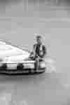

Nosso propósito é conectar você à força da natureza, proporcionando a descarga de adrenalina que o corpo pede e a tranquilidade que a mente precisa para aliviar o estresse do dia a dia. Nosso lema é viver a emoção, sempre sendo conduzido pelas águas da vida.